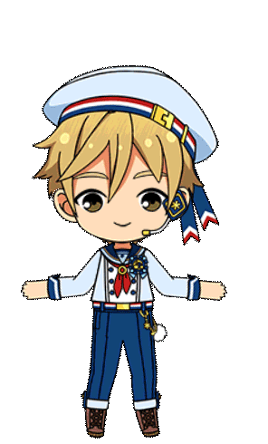

An account dedicated to posting characters deemed as "ordinary"! One per day.
This archetype is present in all kinds of media. Some have different takes on what "ordinary" is, some deconstruct the trope. Others use it to make one relatable.
What's considered "ordinary," "average," "normal," and the likes always seems to vary from person to person. How interesting!
Please read the links on the side before submitting!
Characters posted here must be
Officially described as ordinary
Self-described as ordinary
Described as ordinary by others in-universe
Seen just as another member of society
Do not submit real people (including MCYT). Vtubers are allowed.
Expect some OOC tweets. Please don't be weird in the QRTs or replies.
I'll follow back other OTD accounts I'm comfortable with. NSFW accounts will be muted.
Proof of how the character fits the account's criteria
A screenshot of where it's stated that the character is "ordinary" is good enough.
It would be appreciated if you could provide a short description of the character too!

Hello! My name's Ren (18M) and I'm your local "average character" appreciator.
There's not much to my name, but I'm always eager to learn! I'm not good at describing things, so just read Tomoya Mashiro's wiki page to know what to expect from me.